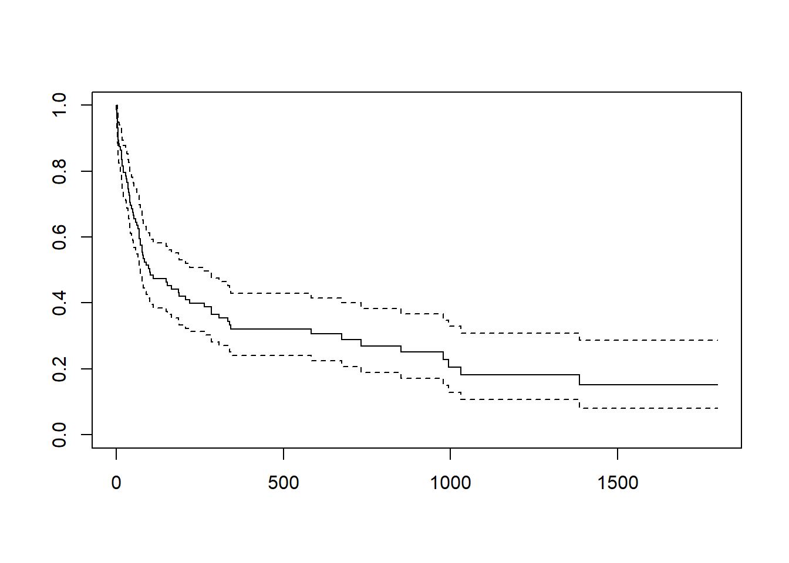
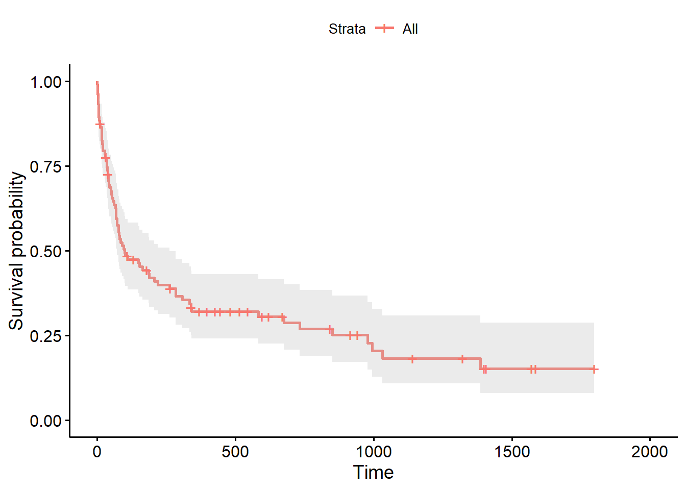
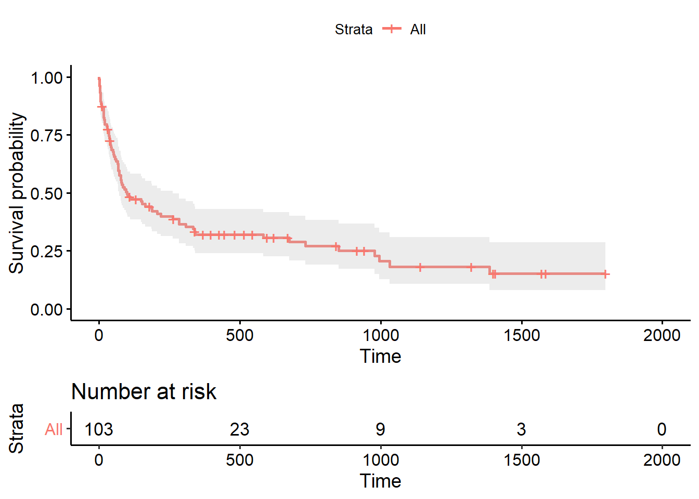
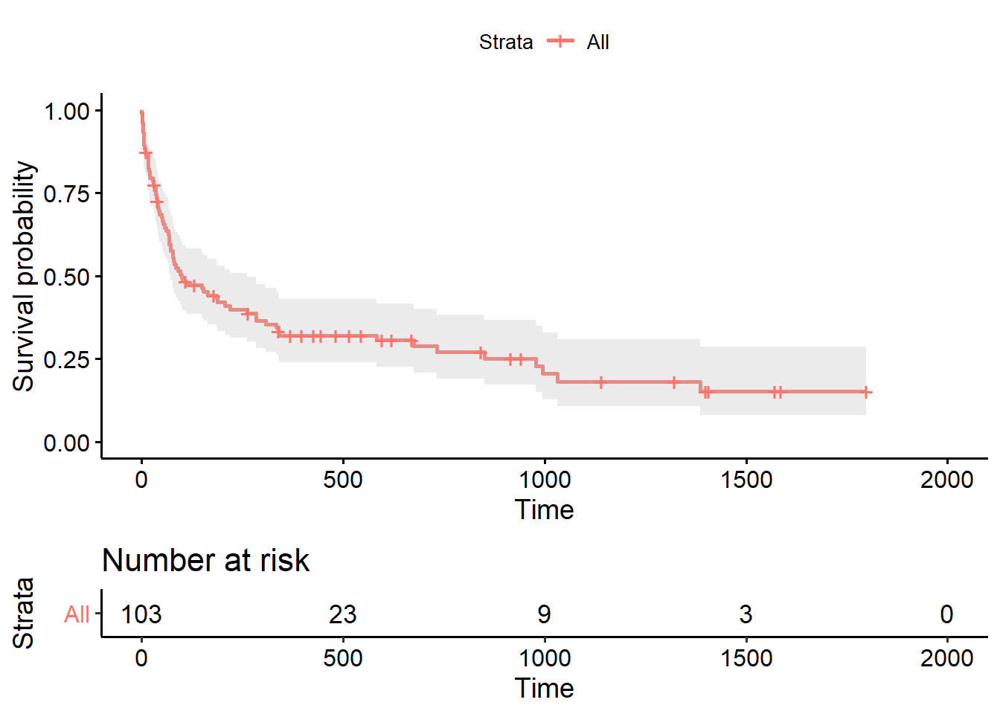
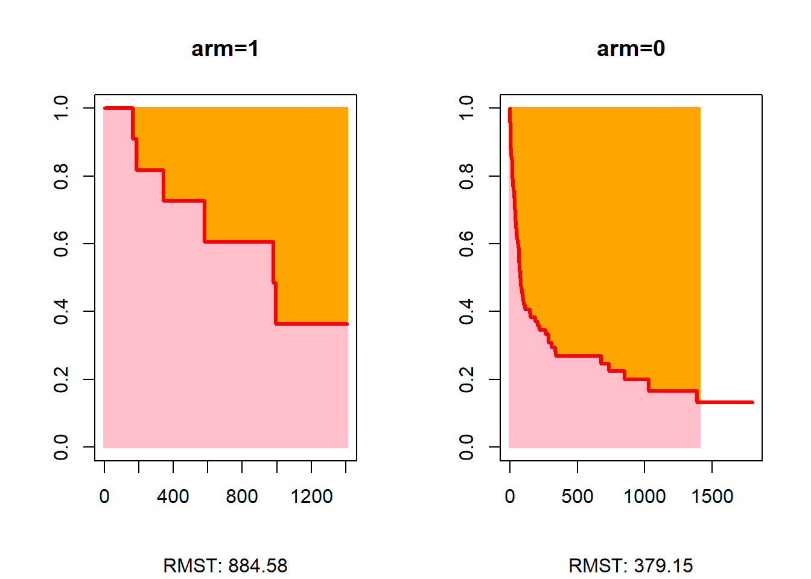
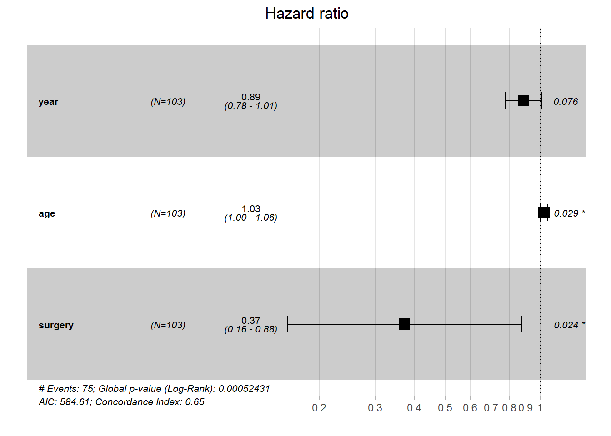
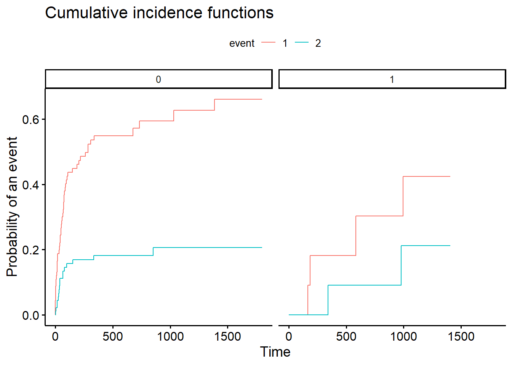
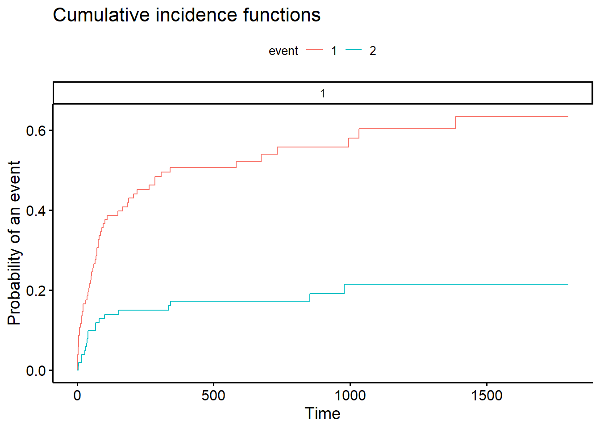
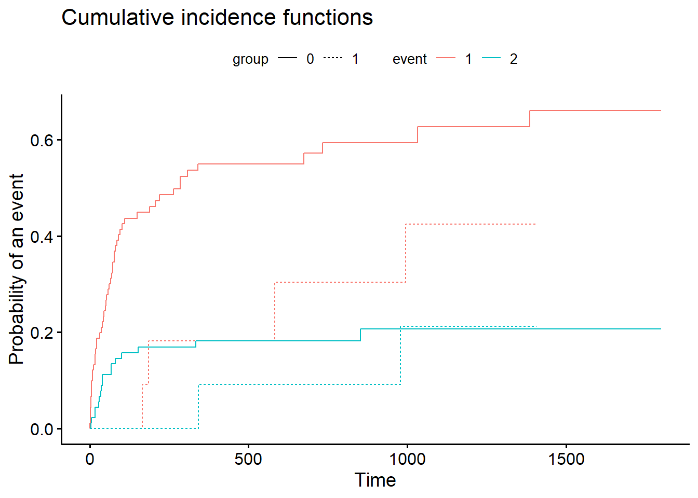

R
1 Packages utilisés pour l’analyse
- Non Paramétrique:
survival,discSurv,survRM2 - Semi paramétrique, temps discret:
survival, fonctionuncount(packagetydir) , fonctionglm, fonctionquantcut(packagegtools) - Paramétrique, Parmar Royston (pour info, non traité):
survivalflexsurv - Risques concurrents:
cmprsk
- Modèle cure (npour info, non traité): modèles mixtes
smcure, modèles non mixtesflexsurv
Autres: survminer, jtools, gtsummary (+RecordLinkage) pour améliorer certains outputs (graphiques et résultats de régression).
1.1 Installation
Les dernières versions de certains packages peuvent être installées via Github (ex: survminer). Pour les récupérer, passer par le package devtools.
#install.packages("survival")
#install.packages("survminer")
#install.packages("flexsurv")
#install.packages("survRM2")
#install.packages("tidyr")
#install.packages("gtools")
#install.packages("jtools")
#install.packages("miceadds")
#install.packages("RecordLinkage")
#install.packages("cmprsk")
#install.packages("tibble")
#install.packages("stringr")
#install.packages("gtsummary")
library(survival)
library(survminer)
library(flexsurv)
library(survRM2)
library(gtools)
library(tidyr)
library(jtools)
library(RecordLinkage)
library(cmprsk)
library(tibble)
library(stringr)2 Survival v2 versus v3
MAJ MAI 2022
Se reporter à l’index ou à la partie sur les risques proportionnels concernant le test de proportionnalité des risques avec le changement de version.
Pour avoir des résultats cohérents avec les autres applications, j’ai conservé la version 2 de la librairie survival. J’ai donné une alternative au test avec une ancienne méthode, consistant à faire une régression linéaire entre les residus standardisés de Schoenfeld et une fonction de la durée, à ce jour limité à \(f(t)=t\). Le code n’est pas trop compliqué, manque juste la récupération des noms des variables. Ici ce n’est pas trop grave car il y a seulement 3 variables pour autant de degrés de liberté, mais cela risque de devenir un peu plus lourd pour un modèle plus riche.
Au cas où je donne les instructions pour installer la dernière mise à jour de la version 2 de survival (penser à désinstaller la v3 si nécessaire). La dernière version de Rtools doit être installée.
# installation survival 2.44-1 (30 mars 2019)
require(remotes)
install_version("survival", version = "2.44-1", repos = "http://cran.us.r-project.org")Maj juin 2022: pour le problème du test de Grambsch-Therneau, j’ai récupéré le programme de la version 2 de survival, renommé la fonction cox.zphold. Une fois chargé avec la fonction source(…path/cox.zphold.R), on peut l’exécuter directement.
3 Analyse Non paramétrique
Chargement de la base transplantation
library(readr)
trans <- read_csv("https://raw.githubusercontent.com/mthevenin/analyse_duree/master/bases/transplantation.csv")## Rows: 103 Columns: 10
## -- Column specification --------------------------------------------------------
## Delimiter: ","
## dbl (10): id, year, age, died, stime, surgery, transplant, wait, mois, compet
##
## i Use `spec()` to retrieve the full column specification for this data.
## i Specify the column types or set `show_col_types = FALSE` to quiet this message.3.0.1 Méthode actuarielle
La fonction disponible du paquet discsurv, lifetable, ne permet pas de définir des intervalles, contrairement à Sas ou Stata. Les estimateurs sont systématiquement calculés sur des largeurs d’intervalle égales à 1, et il ni a pas de calcul des durées sur les différents quantiles de la courbe de survie. Elle ne sera donc pas présentée.
3.0.2 Méthode Kaplan-Meier
Le package survival est le principal outil d’analyse des durée. Le package survminer permet d’améliorer la présentation des graphiques.
Estimation des fonctions de survie
Fonction survfit
Syntaxe
fit <- survfit(Surv(time, status) ~ x, data = base)On peut renseigner les variables permettant de calculer la durée et non la variable de durée elle-même.
fit <- survfit(Surv(variable start, variable end, status) ~ x, data = nom_base)Sans comparaison de groupes:
fit <- survfit(Surv(stime, died) ~ 1, data = trans)
fit## Call: survfit(formula = Surv(stime, died) ~ 1, data = trans)
##
## n events median 0.95LCL 0.95UCL
## 103 75 100 72 263summary(fit)## Call: survfit(formula = Surv(stime, died) ~ 1, data = trans)
##
## time n.risk n.event survival std.err lower 95% CI upper 95% CI
## 1 103 1 0.990 0.00966 0.9715 1.000
## 2 102 3 0.961 0.01904 0.9246 0.999
## 3 99 3 0.932 0.02480 0.8847 0.982
## 5 96 2 0.913 0.02782 0.8597 0.969
## 6 94 2 0.893 0.03043 0.8355 0.955
## 8 92 1 0.883 0.03161 0.8237 0.948
## 9 91 1 0.874 0.03272 0.8119 0.940
## 12 89 1 0.864 0.03379 0.8002 0.933
## 16 88 3 0.835 0.03667 0.7656 0.910
## 17 85 1 0.825 0.03753 0.7543 0.902
## 18 84 1 0.815 0.03835 0.7431 0.894
## 21 83 2 0.795 0.03986 0.7208 0.877
## 28 81 1 0.785 0.04056 0.7098 0.869
## 30 80 1 0.776 0.04122 0.6989 0.861
## 32 78 1 0.766 0.04188 0.6878 0.852
## 35 77 1 0.756 0.04250 0.6769 0.844
## 36 76 1 0.746 0.04308 0.6659 0.835
## 37 75 1 0.736 0.04364 0.6551 0.827
## 39 74 1 0.726 0.04417 0.6443 0.818
## 40 72 2 0.706 0.04519 0.6225 0.800
## 43 70 1 0.696 0.04565 0.6117 0.791
## 45 69 1 0.686 0.04609 0.6009 0.782
## 50 68 1 0.675 0.04650 0.5902 0.773
## 51 67 1 0.665 0.04689 0.5796 0.764
## 53 66 1 0.655 0.04725 0.5690 0.755
## 58 65 1 0.645 0.04759 0.5584 0.746
## 61 64 1 0.635 0.04790 0.5479 0.736
## 66 63 1 0.625 0.04819 0.5374 0.727
## 68 62 2 0.605 0.04870 0.5166 0.708
## 69 60 1 0.595 0.04892 0.5063 0.699
## 72 59 2 0.575 0.04929 0.4857 0.680
## 77 57 1 0.565 0.04945 0.4755 0.670
## 78 56 1 0.554 0.04958 0.4654 0.661
## 80 55 1 0.544 0.04970 0.4552 0.651
## 81 54 1 0.534 0.04979 0.4451 0.641
## 85 53 1 0.524 0.04986 0.4351 0.632
## 90 52 1 0.514 0.04991 0.4251 0.622
## 96 51 1 0.504 0.04994 0.4151 0.612
## 100 50 1 0.494 0.04995 0.4052 0.602
## 102 49 1 0.484 0.04993 0.3953 0.592
## 110 47 1 0.474 0.04992 0.3852 0.582
## 149 45 1 0.463 0.04991 0.3749 0.572
## 153 44 1 0.453 0.04987 0.3647 0.562
## 165 43 1 0.442 0.04981 0.3545 0.551
## 186 41 1 0.431 0.04975 0.3440 0.541
## 188 40 1 0.420 0.04966 0.3336 0.530
## 207 39 1 0.410 0.04954 0.3233 0.519
## 219 38 1 0.399 0.04940 0.3130 0.509
## 263 37 1 0.388 0.04923 0.3027 0.498
## 285 35 2 0.366 0.04885 0.2817 0.475
## 308 33 1 0.355 0.04861 0.2713 0.464
## 334 32 1 0.344 0.04834 0.2610 0.453
## 340 31 1 0.333 0.04804 0.2507 0.442
## 342 29 1 0.321 0.04773 0.2401 0.430
## 583 21 1 0.306 0.04785 0.2252 0.416
## 675 17 1 0.288 0.04830 0.2073 0.400
## 733 16 1 0.270 0.04852 0.1898 0.384
## 852 14 1 0.251 0.04873 0.1712 0.367
## 979 11 1 0.228 0.04934 0.1491 0.348
## 995 10 1 0.205 0.04939 0.1279 0.329
## 1032 9 1 0.182 0.04888 0.1078 0.308
## 1386 6 1 0.152 0.04928 0.0804 0.287plot(fit)
Le premier output fit permet d’obtenir la durée médiane, ici égale à 100 (\(S(100)=0.494\)). Le second , avec la fonction summary permet d’obtenir une table des estimateurs. La fonction de survie peut être tracée avec la fonction plot (en pointillés les intervalles de confiance).
On peut obtenir des graphes de meilleurs qualité avec la librairie survminer.
Avec la fonction ggsurvplot
ggsurvplot(fit, conf.int = TRUE)
On peut ajouter la population encore soumise au risque à plusieurs points d’observation
ggsurvplot(fit, conf.int = TRUE, risk.table = TRUE)
Comparaison des fonctions de survie
On va comparer les fonctions de survie pour la variable surgery.
fit <- survfit(Surv(stime, died) ~ surgery, data = trans)
fit## Call: survfit(formula = Surv(stime, died) ~ surgery, data = trans)
##
## n events median 0.95LCL 0.95UCL
## surgery=0 91 69 78 61 153
## surgery=1 12 6 979 583 NAggsurvplot(fit, conf.int = TRUE, risk.table = TRUE)
Tests du log-rank
On utilise la fonction survdiff, avec comme variante le test de Peto-Peto (rho=1).
La syntaxe est quasiment identique à la fonction survdiff.
survdiff(Surv(stime, died) ~ surgery, rho=1, data = trans)## Call:
## survdiff(formula = Surv(stime, died) ~ surgery, data = trans,
## rho = 1)
##
## N Observed Expected (O-E)^2/E (O-E)^2/V
## surgery=0 91 45.28 39.12 0.968 8.65
## surgery=1 12 2.03 8.18 4.630 8.65
##
## Chisq= 8.7 on 1 degrees of freedom, p= 0.003Ici la variable est binaire. Si on veux tester deux à deux les niveaux d’une variable catégorielle à plus de deux modalités, on utilise la fonction pairwise_survdiff de survminer (syntaxe identique que survdiff).
Comparaison des RMST
La fonction rmst2 du package survRM2 permet de comparer les RMST entre 2 groupes (et pas plus). La strate pour les comparaisons doit être renommée arm. La fonction, issue d’une commande de Stata, n’est pas très souple.
trans$arm=trans$surgery
a=rmst2(trans$stime, trans$died, trans$arm, tau=NULL)
print(a)##
## The truncation time, tau, was not specified. Thus, the default tau 1407 is used.
##
## Restricted Mean Survival Time (RMST) by arm
## Est. se lower .95 upper .95
## RMST (arm=1) 884.576 151.979 586.702 1182.450
## RMST (arm=0) 379.148 58.606 264.283 494.012
##
##
## Restricted Mean Time Lost (RMTL) by arm
## Est. se lower .95 upper .95
## RMTL (arm=1) 522.424 151.979 224.550 820.298
## RMTL (arm=0) 1027.852 58.606 912.988 1142.717
##
##
## Between-group contrast
## Est. lower .95 upper .95 p
## RMST (arm=1)-(arm=0) 505.428 186.175 824.682 0.002
## RMST (arm=1)/(arm=0) 2.333 1.483 3.670 0.000
## RMTL (arm=1)/(arm=0) 0.508 0.284 0.909 0.022plot(a)
4 Modèle semi paramétrique de Cox
Ici tout est estimé avec des fonctions du package survival:
- Estimation du modèle:
coxph. - Test de Grambsch-Therneau:
cox.zph. - Introduction d’une variable dynamique:
survsplit.
4.1 Estimation du modèle
Par défaut, R utilise la correction d’Efron pour les évènements simultanés. Il est préférable de ne pas la modifier.
Syntaxe:
coxph(Surv(time, status) ~ x1 + x2 + ....., data=base, ties="nom_correction"))coxfit = coxph(formula = Surv(stime, died) ~ year + age + surgery, data = trans)
summary(coxfit)## Call:
## coxph(formula = Surv(stime, died) ~ year + age + surgery, data = trans)
##
## n= 103, number of events= 75
##
## coef exp(coef) se(coef) z Pr(>|z|)
## year -0.11963 0.88725 0.06734 -1.776 0.0757 .
## age 0.02958 1.03002 0.01352 2.187 0.0287 *
## surgery -0.98732 0.37257 0.43626 -2.263 0.0236 *
## ---
## Signif. codes: 0 '***' 0.001 '**' 0.01 '*' 0.05 '.' 0.1 ' ' 1
##
## exp(coef) exp(-coef) lower .95 upper .95
## year 0.8872 1.1271 0.7775 1.0124
## age 1.0300 0.9709 1.0031 1.0577
## surgery 0.3726 2.6840 0.1584 0.8761
##
## Concordance= 0.653 (se = 0.032 )
## Likelihood ratio test= 17.63 on 3 df, p=5e-04
## Wald test = 15.76 on 3 df, p=0.001
## Score (logrank) test = 16.71 on 3 df, p=8e-04La table des résultats reporte le logarithme des Risques Ratios (coef) ainsi que les RR (exp(coef)). Il est intéressant de regarder la valeur de concordance (Harrel’s) qui donne des indications sur la qualité de l’ajustement (proche de l’AUC/ROC).
On peut représenter sous forme graphique les résultats avec la fonction ggforest de survminer
ggforest(coxfit)## Warning in .get_data(model, data = data): The `data` argument is not provided.
## Data will be extracted from model fit.
4.2 Tests de l’hypothèse PH
Attention aux résultats entre la v2 et la v3 de survival. Les deux sont présentés, avec un test reposant sur une régression linéaire (OLS même si GLS préférable) entre les résidus de Schoenfeld et une fonction de la durée (ici f(t)=t), et fait rapidement le 17 mai. Pour illustrer la question les résultats du test de Grambsch-Therneau sont donnés pour les deux versions.
Résidus de Schoenfeld
On utilise la fonction cox.zph pour le test de Grambsch-Therneau.
Le test peut utiliser plusieurs fonctions de la durée. Par défaut la fonction utilise \(1-KM\), soit le complémentaire de l’estimateur de Kaplan-Meier (option transform="km").
Test Grambsch-Therneau
Résultat du test avec la v2 de survival
Avec transform="km"
cox.zph(coxfit)## rho chisq p
## year 0.159 1.96 0.1620
## age 0.109 1.15 0.2845
## surgery 0.251 3.96 0.0465
## GLOBAL NA 7.99 0.0462Avec transform="identity" (\(f(t)=t\)) [remarque: solution de Stata par défaut].
cox.zph(coxfit, transform="identity")## rho chisq p
## year 0.102 0.797 0.3720
## age 0.129 1.612 0.2043
## surgery 0.297 5.539 0.0186
## GLOBAL NA 8.756 0.0327Résultat du test avec la v3 de survival
cox.zph(coxfit)
chisq df p
year 3.309 1 0.069
age 0.922 1 0.337
surgery 5.494 1 0.019
GLOBAL 8.581 3 0.035
cox.zph(coxfit, transform="identity")
chisq df p
year 4.54 1 0.033
age 1.71 1 0.191
surgery 4.92 1 0.027
GLOBAL 9.47 3 0.02
La différence est flagrante, en particulier pour la variable year.
Remarque: avec la v3, quelques options ont été ajoutées tel que terms qui permet pour une variable catégorielle à plus de deux modalités de choisir entre un sous test multiple sur la variable (k modalités => k-1 degré de liberté) et une série de tests à 1 degré de liberté sur chaque modalité (k-1 tests). De mon point de vue préférer la seconde solution avec terms=FALSE.
J’ai récupéré la fonction de la version précédente de survival (identique Sas, Stata, Python) et renommé cox.zphold. Elle est téléchargeable à cette adresse :(https://github.com/mthevenin/analyse_duree/tree/main/cox.zphold).
- Une fois enregistré, charger dans le programme d’analyse la fonction
- Après avoir estimé le modèle de Cox, exécuter la fonction
cox.zphold()
source("D:/D/Marc/SMS/FORMATIONS/2022/Durée2/a distribuer/cox.zphold.R")
coxfit = coxph(formula = Surv(stime, died) ~ year + age + surgery, data = trans)cox.zphold(coxfit)## rho chisq p
## year 0.159 1.96 0.1620
## age 0.109 1.15 0.2845
## surgery 0.251 3.96 0.0465
## GLOBAL NA 7.99 0.0462cox.zphold(coxfit, transform="identity")## rho chisq p
## year 0.102 0.797 0.3720
## age 0.129 1.612 0.2043
## surgery 0.297 5.539 0.0186
## GLOBAL NA 8.756 0.0327Régression linéaire entre les résidus standardisés et la durée
- Seulement eu le temps pour \(ft(t)=t\)
- Pas trop pénalisant pour cette application, mais trouver un moyen de récupérer les noms des variables du modèle
- Testé parallèlement avec Stata: ok
Etapes:
- Récupérer les résidus standardisés de Schoenfeld avec la fonction
resid() - Transformer la matrice en base, basculer les valeurs des rangs en variable (librairie
tibble) - Transformer cette dernière variable en variable de durée (librairie
stringr: extraction de la durée) - Exécuter une régression linéaire sur chaque variable: $ residu_{x_i}= a_0 + bt$ [ici une OLS, mais GLS préférable]
# Récupération des résidus
resid= resid(coxfit, type="scaledsch")
resid = data.frame(resid)
library(tibble)
library(stringr)
# Récupération des rangs en variable pour générer la durée
resid= rownames_to_column(resid, var = "Z")
# Création de la variable de durée
resid$t = str_sub(resid$Z, 2, )
resid$t=as.numeric(resid$t)
resid$t=round(resid$t, digits=0)
# ols entre les résidus et la durée
year = summary(lm(X1~t, data=resid))
age = summary(lm(X2~t, data=resid))
surgery = summary(lm(X3~t, data=resid))
year$coefficients[,4] ## (Intercept) t
## 0.05664549 0.38565337age$coefficients[,4] ## (Intercept) t
## 0.2953778 0.2686404surgery$coefficients[,4] ## (Intercept) t
## 0.00065017 0.00975821Introduction d’une intéraction
Lorsque la covariable n’est pas continue, elle doit être transformée en indicatrice. Vérifier que les résultats du modèle sont bien identiques avec le modèle estimé précédemment (ne pas oublier d’omettre le niveau en référence).
Ici la variable surgery est déjà sous forme d’indicatrice (0,1).
La variable d’intéraction est tt(nom-variable), la fonction de la durée (ici forme linéaire simple) est indiquée en option de la fonction: tt = function(x, t, ...) x*t.
coxfit2 = coxph(formula = Surv(stime, died) ~ year + age + surgery + tt(surgery), data = trans, tt = function(x, t, ...) x*t)
summary(coxfit2)## Call:
## coxph(formula = Surv(stime, died) ~ year + age + surgery + tt(surgery),
## data = trans, tt = function(x, t, ...) x * t)
##
## n= 103, number of events= 75
##
## coef exp(coef) se(coef) z Pr(>|z|)
## year -0.123074 0.884198 0.066835 -1.841 0.06555 .
## age 0.028888 1.029310 0.013449 2.148 0.03172 *
## surgery -1.754738 0.172953 0.674391 -2.602 0.00927 **
## tt(surgery) 0.002231 1.002234 0.001102 2.024 0.04299 *
## ---
## Signif. codes: 0 '***' 0.001 '**' 0.01 '*' 0.05 '.' 0.1 ' ' 1
##
## exp(coef) exp(-coef) lower .95 upper .95
## year 0.8842 1.1310 0.77564 1.0080
## age 1.0293 0.9715 1.00253 1.0568
## surgery 0.1730 5.7819 0.04612 0.6486
## tt(surgery) 1.0022 0.9978 1.00007 1.0044
##
## Concordance= 0.656 (se = 0.032 )
## Likelihood ratio test= 21.58 on 4 df, p=2e-04
## Wald test = 16.99 on 4 df, p=0.002
## Score (logrank) test = 19 on 4 df, p=8e-04Rappel: le paramètre estimé pour tt(surgery) ne reporte pas un Risques Ratio, mais un rapport de Risques Ratio.
4.3 Introduction d’une variable dynamique (binaire)
La dimension dynamique est le fait d’avoir été opéré pour une greffe du coeur.
- Etape 1: créer un vecteur donnant les durées aux temps d’évènement.
- Etape 2: appliquer ce vecteurs de points de coupure à la fonction
survsplit. - Etape 3: modifier la variable transplant (ou créer une nouvelle) à l’aide de la variable wait qui prend la valeur 1 à partir du jour de la greffe, 0 avant.
Etape 1 Création de l’objet cut (vecteur)
cut= unique(trans$stime[trans$died == 1])Etape 2
tvc = survSplit(data = trans, cut = cut, end = "stime", start = "stime0", event = "died")Remarque: pour estimer le modèle de Cox de départ avec cette base longue.
coxph(formula = Surv(stime0, stime, died) ~ year + age + surgery, data = tvc)## Call:
## coxph(formula = Surv(stime0, stime, died) ~ year + age + surgery,
## data = tvc)
##
## coef exp(coef) se(coef) z p
## year -0.11963 0.88725 0.06734 -1.776 0.0757
## age 0.02958 1.03002 0.01352 2.187 0.0287
## surgery -0.98732 0.37257 0.43626 -2.263 0.0236
##
## Likelihood ratio test=17.63 on 3 df, p=0.0005243
## n= 3573, number of events= 75Etape 3
tvc$tvc=ifelse(tvc$transplant==1 & tvc$wait<=tvc$stime,1,0)Estimation du modèle
En format long, on doit préciser dans la formule l’intervalle de durée avec les variables stime0 (début) et stime(fin)
tvcfit = coxph(formula = Surv(stime0, stime, died) ~ year + age + surgery + tvc, data = tvc)
summary(tvcfit)## Call:
## coxph(formula = Surv(stime0, stime, died) ~ year + age + surgery +
## tvc, data = tvc)
##
## n= 3573, number of events= 75
##
## coef exp(coef) se(coef) z Pr(>|z|)
## year -0.12032 0.88664 0.06734 -1.787 0.0740 .
## age 0.03044 1.03091 0.01390 2.190 0.0285 *
## surgery -0.98289 0.37423 0.43655 -2.251 0.0244 *
## tvc -0.08221 0.92108 0.30484 -0.270 0.7874
## ---
## Signif. codes: 0 '***' 0.001 '**' 0.01 '*' 0.05 '.' 0.1 ' ' 1
##
## exp(coef) exp(-coef) lower .95 upper .95
## year 0.8866 1.128 0.7770 1.0117
## age 1.0309 0.970 1.0032 1.0594
## surgery 0.3742 2.672 0.1591 0.8805
## tvc 0.9211 1.086 0.5068 1.6741
##
## Concordance= 0.659 (se = 0.032 )
## Likelihood ratio test= 17.7 on 4 df, p=0.001
## Wald test = 15.79 on 4 df, p=0.003
## Score (logrank) test = 16.74 on 4 df, p=0.002ggforest(tvcfit)## Warning in .get_data(model, data = data): The `data` argument is not provided.
## Data will be extracted from model fit.
5 Analyse en temps discret (regression logistique)
Pour la durée, on va utiliser la variable mois (en fait regroupement sur 30 jours).
La fonction uncount du package tidy permettra de splitter la base au temps d’observation.
library("tidyr")dt = uncount(trans,mois)
dt = dt[order(dt$id),]
kable(dt[1:11, ],)##
##
## | id| year| age| died| stime| surgery| transplant| wait| compet| arm|
## |--:|----:|---:|----:|-----:|-------:|----------:|----:|------:|---:|
## | 1| 67| 30| 1| 50| 0| 0| 0| 1| 0|
## | 1| 67| 30| 1| 50| 0| 0| 0| 1| 0|
## | 2| 68| 51| 1| 6| 0| 0| 0| 1| 0|
## | 3| 68| 54| 1| 16| 0| 1| 1| 1| 0|
## | 4| 68| 40| 1| 39| 0| 1| 36| 2| 0|
## | 4| 68| 40| 1| 39| 0| 1| 36| 2| 0|
## | 5| 68| 20| 1| 18| 0| 0| 0| 1| 0|
## | 6| 68| 54| 1| 3| 0| 0| 0| 2| 0|
## | 7| 68| 50| 1| 675| 0| 1| 51| 1| 0|
## | 7| 68| 50| 1| 675| 0| 1| 51| 1| 0|
## | 7| 68| 50| 1| 675| 0| 1| 51| 1| 0|La variable mois a été supprimée, on va générer une variable type compteur pour mesurer la durée à chaque point d’observation. On va également recréer la variable (renommée T).
dt$x=1
dt$t = ave(dt$x,dt$id, FUN=cumsum)
dt$T = ave(dt$x,dt$id, FUN=sum)
kable(dt[1:11, ],)##
##
## | id| year| age| died| stime| surgery| transplant| wait| compet| arm| x| t| T|
## |--:|----:|---:|----:|-----:|-------:|----------:|----:|------:|---:|--:|--:|--:|
## | 1| 67| 30| 1| 50| 0| 0| 0| 1| 0| 1| 1| 2|
## | 1| 67| 30| 1| 50| 0| 0| 0| 1| 0| 1| 2| 2|
## | 2| 68| 51| 1| 6| 0| 0| 0| 1| 0| 1| 1| 1|
## | 3| 68| 54| 1| 16| 0| 1| 1| 1| 0| 1| 1| 1|
## | 4| 68| 40| 1| 39| 0| 1| 36| 2| 0| 1| 1| 2|
## | 4| 68| 40| 1| 39| 0| 1| 36| 2| 0| 1| 2| 2|
## | 5| 68| 20| 1| 18| 0| 0| 0| 1| 0| 1| 1| 1|
## | 6| 68| 54| 1| 3| 0| 0| 0| 2| 0| 1| 1| 1|
## | 7| 68| 50| 1| 675| 0| 1| 51| 1| 0| 1| 1| 23|
## | 7| 68| 50| 1| 675| 0| 1| 51| 1| 0| 1| 2| 23|
## | 7| 68| 50| 1| 675| 0| 1| 51| 1| 0| 1| 3| 23|Remarque : j’utilise ici le code standard de R, on peut faire la même chose avec dplyr de manière plus rapide (mise à jour à prévoir).
Si un individu est décédé, died=1 est reporté sur toute les lignes (idem qu’avec la variable dynamique). On va modifier la variable tel que died=0 si t<T$.
dt$died[dt$t<dt$T]=0
kable(dt[1:11, ],)##
##
## | id| year| age| died| stime| surgery| transplant| wait| compet| arm| x| t| T|
## |--:|----:|---:|----:|-----:|-------:|----------:|----:|------:|---:|--:|--:|--:|
## | 1| 67| 30| 0| 50| 0| 0| 0| 1| 0| 1| 1| 2|
## | 1| 67| 30| 1| 50| 0| 0| 0| 1| 0| 1| 2| 2|
## | 2| 68| 51| 1| 6| 0| 0| 0| 1| 0| 1| 1| 1|
## | 3| 68| 54| 1| 16| 0| 1| 1| 1| 0| 1| 1| 1|
## | 4| 68| 40| 0| 39| 0| 1| 36| 2| 0| 1| 1| 2|
## | 4| 68| 40| 1| 39| 0| 1| 36| 2| 0| 1| 2| 2|
## | 5| 68| 20| 1| 18| 0| 0| 0| 1| 0| 1| 1| 1|
## | 6| 68| 54| 1| 3| 0| 0| 0| 2| 0| 1| 1| 1|
## | 7| 68| 50| 0| 675| 0| 1| 51| 1| 0| 1| 1| 23|
## | 7| 68| 50| 0| 675| 0| 1| 51| 1| 0| 1| 2| 23|
## | 7| 68| 50| 0| 675| 0| 1| 51| 1| 0| 1| 3| 23|5.1 Estimation avec la durée comme variable continue
Avec un effet quadratique d’ordre 2.
dt$t2=dt$t^2
dtfit = glm(died ~ t + t2 + year + age + surgery, data=dt, family="binomial")
summ(dtfit)## MODEL INFO:
## Observations: 1127
## Dependent Variable: died
## Type: Generalized linear model
## Family: binomial
## Link function: logit
##
## MODEL FIT:
## <U+03C7>²(5) = 84.70, p = 0.00
## Pseudo-R² (Cragg-Uhler) = 0.19
## Pseudo-R² (McFadden) = 0.15
## AIC = 478.67, BIC = 508.83
##
## Standard errors: MLE
## ------------------------------------------------
## Est. S.E. z val. p
## ----------------- ------- ------ -------- ------
## (Intercept) 7.74 5.22 1.48 0.14
## t -0.20 0.04 -5.63 0.00
## t2 0.00 0.00 3.98 0.00
## year -0.15 0.07 -2.04 0.04
## age 0.03 0.01 2.35 0.02
## surgery -1.00 0.45 -2.24 0.02
## ------------------------------------------------Remarque sur la présentation: la fonction summ est intégrée au package jtools. Elle ne fonctionne qu’avec le package Recordlinkage qui doit être installé et chargé.
5.2 Estimation avec la durée comme variable discrete
On va créer une variable de type dicrète regroupant la variable t en quartile (pour l’exemple seulement, tous types de regroupement est envisageable).
On va utiliser la fonction quantcut du package gtools.
dt$ct4 <- quantcut(dt$t)
table(dt$ct4) ##
## [1,4] (4,11] (11,23] (23,60]
## 299 275 282 271On va générer un compteur et un total d’observations sur la strate regroupant id et ct4.
dt$n = ave(dt$x,dt$id, dt$ct4, FUN=cumsum)
dt$N = ave(dt$x,dt$id, dt$ct4, FUN=sum)On conserve la dernière observation dans la strate.
dt2 = subset(dt, n==N)Estimation du modèle
fit = glm(died ~ ct4 + year + age + surgery, data=dt2, family=binomial)
summ(fit)## MODEL INFO:
## Observations: 197
## Dependent Variable: died
## Type: Generalized linear model
## Family: binomial
## Link function: logit
##
## MODEL FIT:
## <U+03C7>²(6) = 39.30, p = 0.00
## Pseudo-R² (Cragg-Uhler) = 0.25
## Pseudo-R² (McFadden) = 0.15
## AIC = 236.48, BIC = 259.46
##
## Standard errors: MLE
## ------------------------------------------------
## Est. S.E. z val. p
## ----------------- ------- ------ -------- ------
## (Intercept) 12.45 6.65 1.87 0.06
## ct4(4,11] -1.03 0.42 -2.47 0.01
## ct4(11,23] -1.62 0.54 -2.96 0.00
## ct4(23,60] -0.48 0.60 -0.80 0.42
## year -0.20 0.09 -2.18 0.03
## age 0.05 0.02 2.53 0.01
## surgery -1.11 0.50 -2.21 0.03
## ------------------------------------------------6 Modèles paramétrique usuels
On utilise la fonction survreg du package survival
6.1 Modèle de Weibull
De type AFT
weibull = survreg(formula = Surv(stime, died) ~ year + age + surgery, data = trans, dist="weibull")
summary(weibull)##
## Call:
## survreg(formula = Surv(stime, died) ~ year + age + surgery, data = trans,
## dist = "weibull")
## Value Std. Error z p
## (Intercept) -3.0220 8.7284 -0.35 0.729
## year 0.1620 0.1218 1.33 0.184
## age -0.0615 0.0247 -2.49 0.013
## surgery 1.9703 0.7794 2.53 0.011
## Log(scale) 0.5868 0.0927 6.33 2.5e-10
##
## Scale= 1.8
##
## Weibull distribution
## Loglik(model)= -488.2 Loglik(intercept only)= -497.6
## Chisq= 18.87 on 3 degrees of freedom, p= 0.00029
## Number of Newton-Raphson Iterations: 5
## n= 103De type PH
La paramétrisation PH n’est pas possible avec la fonction survreg.
Il faut utiliser le package flexsurv, qui permet également d’estimer les modèles paramétriques disponibles avec survival.
library(flexsurv)Pour estimer le modèle de Weibull de type PH, on utilise en option dist="weibullPH".
flexsurvreg(formula = Surv(stime, died) ~ year + age + surgery, data = trans, dist="weibullPH")## Call:
## flexsurvreg(formula = Surv(stime, died) ~ year + age + surgery,
## data = trans, dist = "weibullPH")
##
## Estimates:
## data mean est L95% U95% se exp(est)
## shape NA 5.56e-01 4.64e-01 6.67e-01 5.16e-02 NA
## scale NA 5.37e+00 4.27e-04 6.75e+04 2.59e+01 NA
## year 7.06e+01 -9.01e-02 -2.20e-01 3.97e-02 6.62e-02 9.14e-01
## age 4.46e+01 3.42e-02 7.13e-03 6.13e-02 1.38e-02 1.03e+00
## surgery 1.17e-01 -1.10e+00 -1.95e+00 -2.45e-01 4.34e-01 3.34e-01
## L95% U95%
## shape NA NA
## scale NA NA
## year 8.03e-01 1.04e+00
## age 1.01e+00 1.06e+00
## surgery 1.43e-01 7.83e-01
##
## N = 103, Events: 75, Censored: 28
## Total time at risk: 31938
## Log-likelihood = -488.1683, df = 5
## AIC = 986.33667 Risques concurrents
Package cmprsk pour l’analyse paramétrique et le modèle de Fine-Gray.
Package cmprsk pour l’analyse non paramétrique et le modèle de Fine-Gray. La variable de censure/évènement, compet, correspond à la variable died avec une modalité supplémentaire simulée. On suppose l’existence d’une cause supplémentaire au décès autre qu’une malformation cardiaque et non strictement indépendante de cell-ci.
compet <- read_csv("https://raw.githubusercontent.com/mthevenin/analyse_duree/master/bases/transplantation.csv")
# variable compet
table(compet$compet) ##
## 0 1 2
## 28 56 19# variable died
table(compet$died) ##
## 0 1
## 28 757.1 Non paramétrique: incidences cumulées
On utilise la fonction cuminc du package cmprsk.
Pas de comparaison
ic = cuminc(compet$stime, compet$compet)
ic ## Estimates and Variances:
## $est
## 500 1000 1500
## 1 1 0.5067598 0.5808345 0.6340038
## 1 2 0.1720161 0.2140841 0.2140841
##
## $var
## 500 1000 1500
## 1 1 0.002619449 0.003131847 0.003676516
## 1 2 0.001473283 0.002203770 0.002203770plot(ic)
Avec survminer
ggcompetingrisks(fit = ic)
Comparaison
Le test de Gray est automatiquement exécuté.
ic = cuminc(compet$stime, compet$compet, group=compet$surgery, rho=1)
ic ## Tests:
## stat pv df
## 1 4.604792 0.03188272 1
## 2 0.272147 0.60189515 1
## Estimates and Variances:
## $est
## 500 1000 1500
## 0 1 0.54917896 0.5940358 0.6604903
## 1 1 0.18181818 0.4242424 NA
## 0 2 0.18168014 0.2066006 0.2066006
## 1 2 0.09090909 0.2121212 NA
##
## $var
## 500 1000 1500
## 0 1 0.002955869 0.003335897 0.004199157
## 1 1 0.014958678 0.033339569 NA
## 0 2 0.001727112 0.002271242 0.002271242
## 1 2 0.008449138 0.022024737 NAplot(ic)
Avec survminer. Pour avoir un seul graphique pour toutes les courbes ajouter l’option multiple_panels = F
ggcompetingrisks(fit = ic)
ggcompetingrisks(fit = ic, multiple_panels = F)
7.2 Modèles
7.2.1 Modèle de Fine-Gray
Attention à l’interprétation des “risks ratio”.
Fonction crr du plackage cmprsk.
Peu pratique les covariables doivent être introduites sous forme de matrice (n observation * k variables). Pour les covariables discrètes, prévoir la forme binaire et l’omission de la catégorie de référence.
c <- compet[c("year", "age", "surgery")]
c = as.matrix(c)
summary(crr(compet$stime, compet$compet, c))## Competing Risks Regression
##
## Call:
## crr(ftime = compet$stime, fstatus = compet$compet, cov1 = c)
##
## coef exp(coef) se(coef) z p-value
## year -0.0724 0.930 0.0713 -1.02 0.310
## age 0.0370 1.038 0.0176 2.10 0.036
## surgery -0.8688 0.419 0.4488 -1.94 0.053
##
## exp(coef) exp(-coef) 2.5% 97.5%
## year 0.930 1.075 0.809 1.07
## age 1.038 0.964 1.002 1.07
## surgery 0.419 2.384 0.174 1.01
##
## Num. cases = 103
## Pseudo Log-likelihood = -228
## Pseudo likelihood ratio test = 11.2 on 3 df,7.2.2 Modèle logistique multinomial à temps discret
On va de nouveau utiliser la variable mois (temps discret).
Le modèle sera estimé à l’aide la fonction multinom du package nnet, les p-values doivent-être programmées, l’output ne donnant que les erreurs-types.
#install.packages("nnet")
library(nnet)## Warning: le package 'nnet' a été compilé avec la version R 4.1.3Transformation de la base
compet$T = compet$mois
td = uncount(compet, mois)
td$x=1
td$t = ave(td$x, td$id, FUN=cumsum)
td$t2 = td$t*td$t
td$e = ifelse(td$t<td$T,0, td$compet)Estimation
Pour estimer le modèle, on utilise la fonction mlogit du package nnet. Les p-values seront calculées à partir d’un test bilatéral (statistique z).
competfit = multinom(formula = e ~ t + t2 + year + age + surgery, data = td)## # weights: 21 (12 variable)
## initial value 1238.136049
## iter 10 value 579.836377
## iter 20 value 387.824428
## iter 30 value 277.775477
## iter 40 value 275.151304
## iter 50 value 275.005454
## final value 275.005419
## convergedsummary(competfit)## Call:
## multinom(formula = e ~ t + t2 + year + age + surgery, data = td)
##
## Coefficients:
## (Intercept) t t2 year age surgery
## 1 5.646796 -0.2034545 0.003168301 -0.1284492 0.04389670 -1.1471457
## 2 11.316123 -0.2023134 0.002981492 -0.2036701 0.01100051 -0.6137982
##
## Std. Errors:
## (Intercept) t t2 year age surgery
## 1 0.007756736 0.04130290 0.0008964768 0.01166713 0.01688253 0.5319373
## 2 0.013113980 0.06898341 0.0015340216 0.01613615 0.02404470 0.7612701
##
## Residual Deviance: 550.0108
## AIC: 574.0108z = summary(competfit)$coefficients/summary(competfit)$standard.errors
p <- (1 - pnorm(abs(z), 0, 1)) * 2
p## (Intercept) t t2 year age surgery
## 1 0 8.396729e-07 0.0004090588 0 0.009318953 0.03104129
## 2 0 3.359389e-03 0.0519462468 0 0.647310003 0.42008041